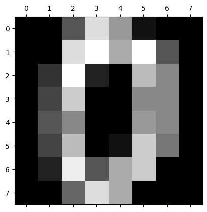

from sklearn.datasets import load_digits
import pandas as pd
dataset = load_digits()
dataset.keys()dict_keys(['data', 'target', 'frame', 'feature_names', 'target_names', 'images', 'DESCR'])Benedict Thekkel
dict_keys(['data', 'target', 'frame', 'feature_names', 'target_names', 'images', 'DESCR'])array([ 0., 0., 5., 13., 9., 1., 0., 0., 0., 0., 13., 15., 10.,
15., 5., 0., 0., 3., 15., 2., 0., 11., 8., 0., 0., 4.,
12., 0., 0., 8., 8., 0., 0., 5., 8., 0., 0., 9., 8.,
0., 0., 4., 11., 0., 1., 12., 7., 0., 0., 2., 14., 5.,
10., 12., 0., 0., 0., 0., 6., 13., 10., 0., 0., 0.])array([[ 0., 0., 5., 13., 9., 1., 0., 0.],
[ 0., 0., 13., 15., 10., 15., 5., 0.],
[ 0., 3., 15., 2., 0., 11., 8., 0.],
[ 0., 4., 12., 0., 0., 8., 8., 0.],
[ 0., 5., 8., 0., 0., 9., 8., 0.],
[ 0., 4., 11., 0., 1., 12., 7., 0.],
[ 0., 2., 14., 5., 10., 12., 0., 0.],
[ 0., 0., 6., 13., 10., 0., 0., 0.]])<Figure size 640x480 with 0 Axes>
| pixel_0_0 | pixel_0_1 | pixel_0_2 | pixel_0_3 | pixel_0_4 | pixel_0_5 | pixel_0_6 | pixel_0_7 | pixel_1_0 | pixel_1_1 | ... | pixel_6_6 | pixel_6_7 | pixel_7_0 | pixel_7_1 | pixel_7_2 | pixel_7_3 | pixel_7_4 | pixel_7_5 | pixel_7_6 | pixel_7_7 | |
|---|---|---|---|---|---|---|---|---|---|---|---|---|---|---|---|---|---|---|---|---|---|
| 0 | 0.0 | 0.0 | 5.0 | 13.0 | 9.0 | 1.0 | 0.0 | 0.0 | 0.0 | 0.0 | ... | 0.0 | 0.0 | 0.0 | 0.0 | 6.0 | 13.0 | 10.0 | 0.0 | 0.0 | 0.0 |
| 1 | 0.0 | 0.0 | 0.0 | 12.0 | 13.0 | 5.0 | 0.0 | 0.0 | 0.0 | 0.0 | ... | 0.0 | 0.0 | 0.0 | 0.0 | 0.0 | 11.0 | 16.0 | 10.0 | 0.0 | 0.0 |
| 2 | 0.0 | 0.0 | 0.0 | 4.0 | 15.0 | 12.0 | 0.0 | 0.0 | 0.0 | 0.0 | ... | 5.0 | 0.0 | 0.0 | 0.0 | 0.0 | 3.0 | 11.0 | 16.0 | 9.0 | 0.0 |
| 3 | 0.0 | 0.0 | 7.0 | 15.0 | 13.0 | 1.0 | 0.0 | 0.0 | 0.0 | 8.0 | ... | 9.0 | 0.0 | 0.0 | 0.0 | 7.0 | 13.0 | 13.0 | 9.0 | 0.0 | 0.0 |
| 4 | 0.0 | 0.0 | 0.0 | 1.0 | 11.0 | 0.0 | 0.0 | 0.0 | 0.0 | 0.0 | ... | 0.0 | 0.0 | 0.0 | 0.0 | 0.0 | 2.0 | 16.0 | 4.0 | 0.0 | 0.0 |
5 rows × 64 columns
| pixel_0_0 | pixel_0_1 | pixel_0_2 | pixel_0_3 | pixel_0_4 | pixel_0_5 | pixel_0_6 | pixel_0_7 | pixel_1_0 | pixel_1_1 | ... | pixel_6_6 | pixel_6_7 | pixel_7_0 | pixel_7_1 | pixel_7_2 | pixel_7_3 | pixel_7_4 | pixel_7_5 | pixel_7_6 | pixel_7_7 | |
|---|---|---|---|---|---|---|---|---|---|---|---|---|---|---|---|---|---|---|---|---|---|
| count | 1797.0 | 1797.000000 | 1797.000000 | 1797.000000 | 1797.000000 | 1797.000000 | 1797.000000 | 1797.000000 | 1797.000000 | 1797.000000 | ... | 1797.000000 | 1797.000000 | 1797.000000 | 1797.000000 | 1797.000000 | 1797.000000 | 1797.000000 | 1797.000000 | 1797.000000 | 1797.000000 |
| mean | 0.0 | 0.303840 | 5.204786 | 11.835838 | 11.848080 | 5.781859 | 1.362270 | 0.129661 | 0.005565 | 1.993879 | ... | 3.725097 | 0.206455 | 0.000556 | 0.279354 | 5.557596 | 12.089037 | 11.809126 | 6.764051 | 2.067891 | 0.364496 |
| std | 0.0 | 0.907192 | 4.754826 | 4.248842 | 4.287388 | 5.666418 | 3.325775 | 1.037383 | 0.094222 | 3.196160 | ... | 4.919406 | 0.984401 | 0.023590 | 0.934302 | 5.103019 | 4.374694 | 4.933947 | 5.900623 | 4.090548 | 1.860122 |
| min | 0.0 | 0.000000 | 0.000000 | 0.000000 | 0.000000 | 0.000000 | 0.000000 | 0.000000 | 0.000000 | 0.000000 | ... | 0.000000 | 0.000000 | 0.000000 | 0.000000 | 0.000000 | 0.000000 | 0.000000 | 0.000000 | 0.000000 | 0.000000 |
| 25% | 0.0 | 0.000000 | 1.000000 | 10.000000 | 10.000000 | 0.000000 | 0.000000 | 0.000000 | 0.000000 | 0.000000 | ... | 0.000000 | 0.000000 | 0.000000 | 0.000000 | 1.000000 | 11.000000 | 10.000000 | 0.000000 | 0.000000 | 0.000000 |
| 50% | 0.0 | 0.000000 | 4.000000 | 13.000000 | 13.000000 | 4.000000 | 0.000000 | 0.000000 | 0.000000 | 0.000000 | ... | 1.000000 | 0.000000 | 0.000000 | 0.000000 | 4.000000 | 13.000000 | 14.000000 | 6.000000 | 0.000000 | 0.000000 |
| 75% | 0.0 | 0.000000 | 9.000000 | 15.000000 | 15.000000 | 11.000000 | 0.000000 | 0.000000 | 0.000000 | 3.000000 | ... | 7.000000 | 0.000000 | 0.000000 | 0.000000 | 10.000000 | 16.000000 | 16.000000 | 12.000000 | 2.000000 | 0.000000 |
| max | 0.0 | 8.000000 | 16.000000 | 16.000000 | 16.000000 | 16.000000 | 16.000000 | 15.000000 | 2.000000 | 16.000000 | ... | 16.000000 | 13.000000 | 1.000000 | 9.000000 | 16.000000 | 16.000000 | 16.000000 | 16.000000 | 16.000000 | 16.000000 |
8 rows × 64 columns
array([[ 0. , -0.33501649, -0.04308102, ..., -1.14664746,
-0.5056698 , -0.19600752],
[ 0. , -0.33501649, -1.09493684, ..., 0.54856067,
-0.5056698 , -0.19600752],
[ 0. , -0.33501649, -1.09493684, ..., 1.56568555,
1.6951369 , -0.19600752],
...,
[ 0. , -0.33501649, -0.88456568, ..., -0.12952258,
-0.5056698 , -0.19600752],
[ 0. , -0.33501649, -0.67419451, ..., 0.8876023 ,
-0.5056698 , -0.19600752],
[ 0. , -0.33501649, 1.00877481, ..., 0.8876023 ,
-0.26113572, -0.19600752]])0.9722222222222222| pixel_0_0 | pixel_0_1 | pixel_0_2 | pixel_0_3 | pixel_0_4 | pixel_0_5 | pixel_0_6 | pixel_0_7 | pixel_1_0 | pixel_1_1 | ... | pixel_6_6 | pixel_6_7 | pixel_7_0 | pixel_7_1 | pixel_7_2 | pixel_7_3 | pixel_7_4 | pixel_7_5 | pixel_7_6 | pixel_7_7 | |
|---|---|---|---|---|---|---|---|---|---|---|---|---|---|---|---|---|---|---|---|---|---|
| 0 | 0.0 | 0.0 | 5.0 | 13.0 | 9.0 | 1.0 | 0.0 | 0.0 | 0.0 | 0.0 | ... | 0.0 | 0.0 | 0.0 | 0.0 | 6.0 | 13.0 | 10.0 | 0.0 | 0.0 | 0.0 |
| 1 | 0.0 | 0.0 | 0.0 | 12.0 | 13.0 | 5.0 | 0.0 | 0.0 | 0.0 | 0.0 | ... | 0.0 | 0.0 | 0.0 | 0.0 | 0.0 | 11.0 | 16.0 | 10.0 | 0.0 | 0.0 |
| 2 | 0.0 | 0.0 | 0.0 | 4.0 | 15.0 | 12.0 | 0.0 | 0.0 | 0.0 | 0.0 | ... | 5.0 | 0.0 | 0.0 | 0.0 | 0.0 | 3.0 | 11.0 | 16.0 | 9.0 | 0.0 |
| 3 | 0.0 | 0.0 | 7.0 | 15.0 | 13.0 | 1.0 | 0.0 | 0.0 | 0.0 | 8.0 | ... | 9.0 | 0.0 | 0.0 | 0.0 | 7.0 | 13.0 | 13.0 | 9.0 | 0.0 | 0.0 |
| 4 | 0.0 | 0.0 | 0.0 | 1.0 | 11.0 | 0.0 | 0.0 | 0.0 | 0.0 | 0.0 | ... | 0.0 | 0.0 | 0.0 | 0.0 | 0.0 | 2.0 | 16.0 | 4.0 | 0.0 | 0.0 |
| ... | ... | ... | ... | ... | ... | ... | ... | ... | ... | ... | ... | ... | ... | ... | ... | ... | ... | ... | ... | ... | ... |
| 1792 | 0.0 | 0.0 | 4.0 | 10.0 | 13.0 | 6.0 | 0.0 | 0.0 | 0.0 | 1.0 | ... | 4.0 | 0.0 | 0.0 | 0.0 | 2.0 | 14.0 | 15.0 | 9.0 | 0.0 | 0.0 |
| 1793 | 0.0 | 0.0 | 6.0 | 16.0 | 13.0 | 11.0 | 1.0 | 0.0 | 0.0 | 0.0 | ... | 1.0 | 0.0 | 0.0 | 0.0 | 6.0 | 16.0 | 14.0 | 6.0 | 0.0 | 0.0 |
| 1794 | 0.0 | 0.0 | 1.0 | 11.0 | 15.0 | 1.0 | 0.0 | 0.0 | 0.0 | 0.0 | ... | 0.0 | 0.0 | 0.0 | 0.0 | 2.0 | 9.0 | 13.0 | 6.0 | 0.0 | 0.0 |
| 1795 | 0.0 | 0.0 | 2.0 | 10.0 | 7.0 | 0.0 | 0.0 | 0.0 | 0.0 | 0.0 | ... | 2.0 | 0.0 | 0.0 | 0.0 | 5.0 | 12.0 | 16.0 | 12.0 | 0.0 | 0.0 |
| 1796 | 0.0 | 0.0 | 10.0 | 14.0 | 8.0 | 1.0 | 0.0 | 0.0 | 0.0 | 2.0 | ... | 8.0 | 0.0 | 0.0 | 1.0 | 8.0 | 12.0 | 14.0 | 12.0 | 1.0 | 0.0 |
1797 rows × 64 columns
(1797, 29)array([0.14890594, 0.13618771, 0.11794594, 0.08409979, 0.05782415,
0.0491691 , 0.04315987, 0.03661373, 0.03353248, 0.03078806,
0.02372341, 0.02272697, 0.01821863, 0.01773855, 0.01467101,
0.01409716, 0.01318589, 0.01248138, 0.01017718, 0.00905617,
0.00889538, 0.00797123, 0.00767493, 0.00722904, 0.00695889,
0.00596081, 0.00575615, 0.00515158, 0.0048954 ])PCA created 29 components out of 64 original columns
array([[ -1.25946645, 21.27488348, -9.46305462, ..., 3.67072108,
-0.9436689 , -1.13250195],
[ 7.9576113 , -20.76869896, 4.43950604, ..., 2.18261819,
-0.51022719, 2.31354911],
[ 6.99192297, -9.95598641, 2.95855808, ..., 4.22882114,
2.1576573 , 0.8379578 ],
...,
[ 10.8012837 , -6.96025223, 5.59955453, ..., -3.56866194,
1.82444444, 3.53885886],
[ -4.87210009, 12.42395362, -10.17086635, ..., 3.25330054,
0.95484174, -0.93895602],
[ -0.34438963, 6.36554919, 10.77370849, ..., -3.01636722,
1.29752723, 2.58810313]])0.9694444444444444Let’s now select only two components
array([[ -1.2594598 , 21.27487967, -9.46303989, ..., -3.31223438,
6.02583852, 2.68741732],
[ 7.95761297, -20.7686941 , 4.43950445, ..., -6.50507014,
-2.27310577, -2.14622234],
[ 6.99193119, -9.95600512, 2.95858793, ..., 6.83484372,
-1.65925951, -4.25884236],
...,
[ 10.80128998, -6.96027365, 5.5995876 , ..., 1.24767177,
2.62633682, -5.79460334],
[ -4.87210168, 12.42396132, -10.17087749, ..., -1.21624842,
10.77743555, 2.38010911],
[ -0.34438951, 6.36554076, 10.77371718, ..., 7.0540168 ,
0.72142473, 0.27006973]])array([0.14890594, 0.13618771, 0.11794594, 0.08409979, 0.05782415,
0.0491691 , 0.04315987, 0.03661373, 0.03353248, 0.03078806,
0.02372336, 0.02272696, 0.01821856, 0.01773823, 0.01466903,
0.01409675])You can see that both combined retains 0.14+0.13=0.27 or 27% of important feature information
0.9472222222222222We get less accuancy (~60%) as using only 2 components did not retain much of the feature information. However in real life you will find many cases where using 2 or few PCA components can still give you a pretty good accuracy
Back to top